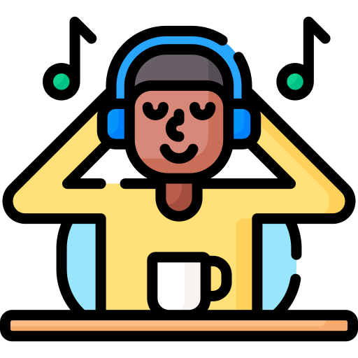

@_vne_.75
Hi ! Je m’appelle Delphine, étudiante en BUT MMI (Métiers du Multimédia et de l’Internet) à l’IUT de Marne-la-Vallée. Passionnée par la communication audiovisuelle, je maîtrise des outils tels que DaVinci Resovle/Premiere Pro, After Effect, ainsi qu'Illustrator, et j'ai des compétences en programmation avec HTML, CSS et Bootstrap. Mon objectif est de devenir indépendante et de travailler en tant qu'auto-entrepreneuse dans le domaine qui me passionne. Voyager est l'une de mes passions, j'aime découvrir des endroits inoubliables et c'est pourquoi, j'aimerais allier travail et passion ! 😀
Parcours Scolaire
Lycée
Au lycée, j'ai fait un parcours STL (Sciences et Technologies de Laboratoire). Bien que ce domaine n'ait presque rien à voir avec la MMI, j'ai décidé de continuer afin d'obtenir mon bac. J'ai finalement réussi à l’avoir avec une mention bien, ce dont je suis très fière. C'est ainsi que je me suis réorienté l'année suivante vers la MMI.
J'ai choisi d'aller en MMI car en STL, j'ai beaucoup apprécié réaliser mes comptes rendus scientifiques en numérique. C'est donc pour cela que je souhaitais me familiariser plus profondément avec l'informatique.
MMI à Vélizy (2023/2024)
J'ai effectué ma première année en MMI à l'IUT de Vélizy. Cette année a été un peu compliquée, car l'établissement était assez loin de chez moi. Étant nouvelle dans ce domaine, j'ai dû faire preuve d'une plus grande adaptabilité. Cependant, j'ai réussi à garder la tête froide et à me motiver à travailler d'arrache-pied. Je suis tout de même très fière de mon parcours à l'IUT de Vélizy. C'est durant cette année que j'ai découvert ma passion pour le montage vidéo.
MMI à Champs sur Marne (2024/2025)
Nouvelle année, nouvel établissement : j'ai effectué ma deuxième année de BUT MMI à l'IUT de Champs-sur-Marne, car il était plus proche de chez moi. Ce changement signifiait aussi découvrir de nouveaux professeurs, de nouveaux camarades, et m'adapter à un nouvel environnement. Finalement, ça a été l'une de mes meilleures années en MMI. J'ai pu travailler sur des projets très intéressants, qui m'ont encore plus donné envie de continuer dans le domaine de la communication audiovisuelle, que ce soit le montage vidéo, la photographie et le motion design.
Compétences

Davinci Resolve
Je l'utilise depuis l'année dernière, il m'est très utile pour monter des vidéos, que ce soit pour les études que pour les stages. Son point fort est l'étalonnage.

Premiere Pro
Pendant mon stage de 3 mois au Leizart Studio, j’ai beaucoup travaillé sur ce logiciel, surtout pour monter des stories et des vidéos pour les réseaux sociaux. J’ai appris à gérer tout le processus de montage, du dérushage à l’export, ce qui m’a permis de bien renforcer mes compétences.

After effect
Cette année, j'ai approfondi mes compétences sur ce logiciel. J'apprécie beaucoup cet outil, car il me permet de réaliser des animations, du tracking, du composing… ce qui apporte du dynamisme à mes vidéos.

Illustrator
Ce logiciel me permet de créer des croquis de logos et des illustrations simples, notamment pour des affiches.

Photoshop
Forte utilisation pendant mon stage de 3 mois au Leizart Studios où j'ai réalisé plusieurs miniatures YouTube pour l'artiste Hector Arthur.

Figma
J'utilise principalement Figma pour concevoir des maquettes de sites web avant de passer au codage. Cela m'aide à organiser les couleurs, les thèmes, les typographies et la structure du site, afin d'assurer une ergonomie optimale pour l'utilisateur.

HTML5 et CSS3
Au cours de ma formation, l'apprentissage de ces deux langages de programmation est essentiel. Comme vous pouvez le constater sur mon site, je maîtrise bien ces outils.

Bootstrap
J'ai découvert Bootstrap cette année. En approfondissant mes connaissances, j'ai pu l'utiliser pour créer mon portfolio en y intégrant du CSS. Ce framework est très utile pour rendre les sites responsives et constitue un gain de temps pour la programmation simple.
Mes passions
Voyager

Films
Photographie
Lire
